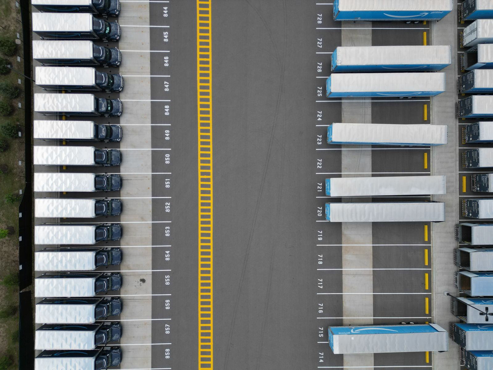
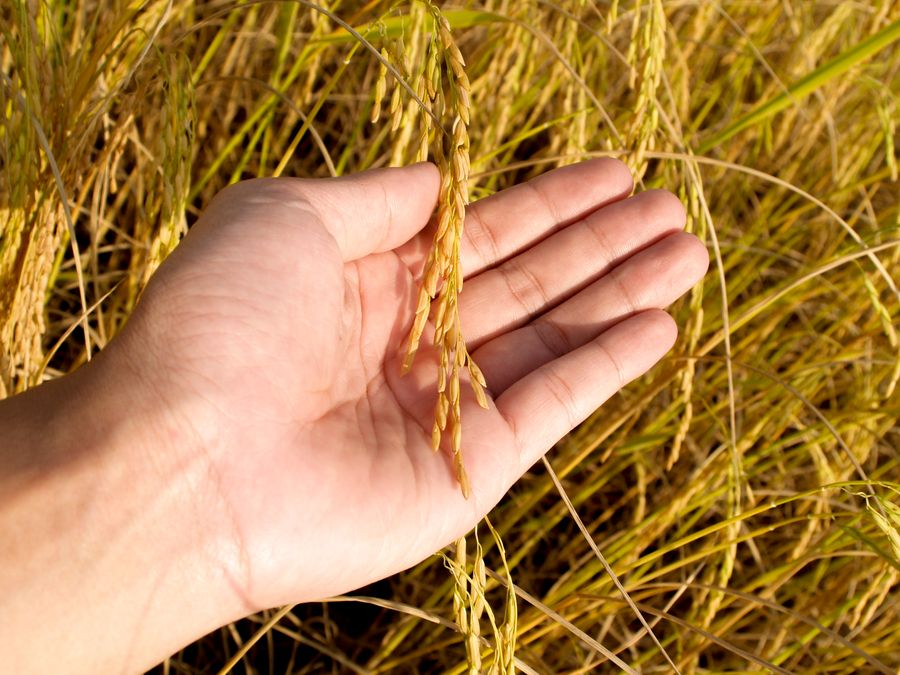

Foundation
Established with a clear focus on professional food commodity trade.
About Golden Chariot
From Dubai, we connect carefully selected food commodities with customers who value quality, reliability and professional coordination.
Our Story
Golden Chariot Foodstuff Trading Co. LLC is a Dubai-based food trading company focused on premium rice and a growing portfolio of agricultural commodities. Our approach brings together dependable sourcing, clear communication and market-aware supply coordination.
We believe lasting trade relationships are built one careful shipment at a time—with attention to product requirements, documentation and destination needs.
Our Journey
Our journey is shaped by a commitment to building a dependable Dubai-based food trading platform.
Established with a clear focus on professional food commodity trade.
Developing relationships with carefully assessed agricultural sources.
Building a focused portfolio across Basmati and commercial rice grades.
Supporting enquiries from the Middle East and international destinations.
Expanding responsibly into complementary food commodities.
What Guides Us
To grow as a trusted food trading partner connecting reliable supply with evolving global market needs.
To coordinate quality-focused sourcing and responsive service with clarity at every stage.
Integrity, consistency, accountability and respect for every long-term business relationship.

Strategic Sourcing
Dubai gives Golden Chariot access to established ports, multimodal logistics and international commercial networks. This supports practical coordination between agricultural origins and destination markets.
Global Outlook
Our Commitment
We aim to grow with care—building supplier relationships responsibly, exploring practical packaging improvements and prioritising transparent communication.


Build With Us
Tell us about your market, product requirements and destination. Our team will help coordinate the next step.